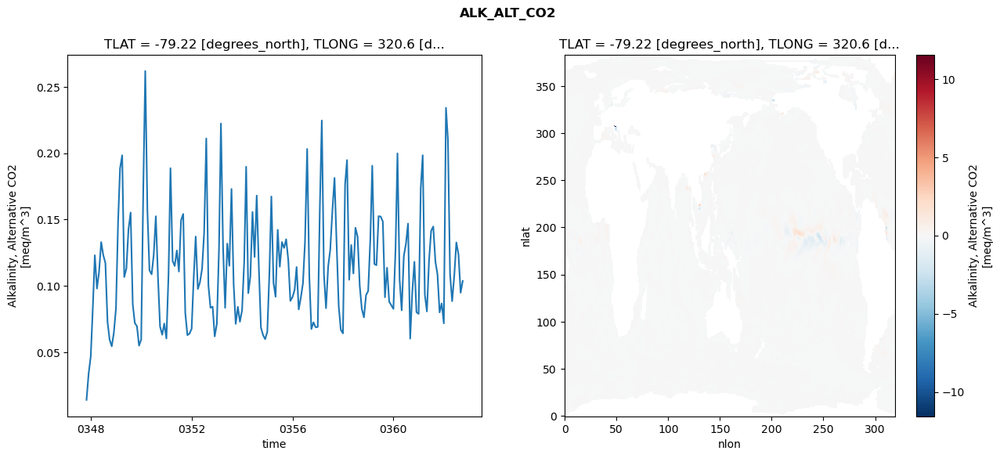
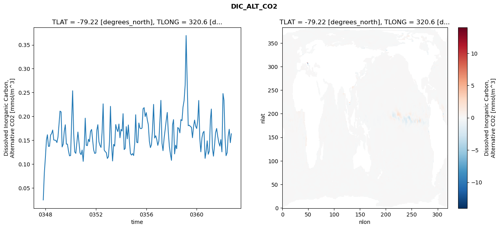
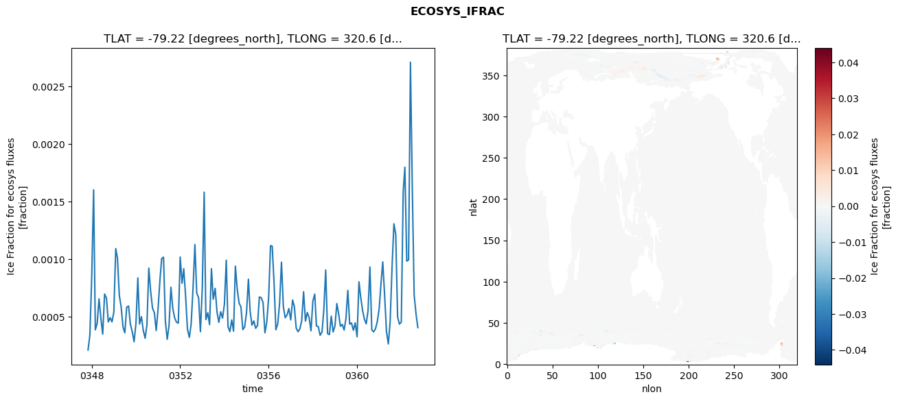
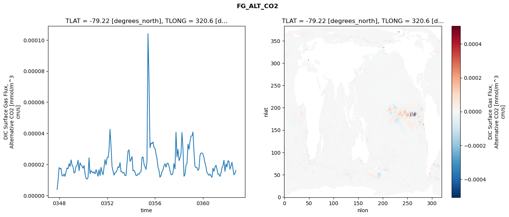

glb-dor_North_Atlantic_basin_019_1999-10-01_00079#
Simulation details#
Case: smyle.cdr-atlas-v0.glb-dor_North_Atlantic_basin_019_1999-10-01_00079.001
Basin: North_Atlantic_basin
Polygon: 19.0
Start date: 1999-10
Show code cell source Hide code cell source
import xarray as xr
import matplotlib.pyplot as plt
Show code cell source Hide code cell source
zarr_store = "/path/to/zarr/store"
# Parameters
zarr_store = "/global/cfs/projectdirs/m4746/Projects/Ocean-CDR-Atlas-v0/data/validation/smyle.cdr-atlas-v0.glb-dor_North_Atlantic_basin_019_1999-10-01_00079.001.validation.zarr"
Show code cell source Hide code cell source
%%time
ds_o = xr.open_zarr(zarr_store).compute()
ds_o
CPU times: user 658 ms, sys: 459 ms, total: 1.12 s
Wall time: 1.43 s
<xarray.Dataset> Size: 2MB
Dimensions: (nlat: 384, nlon: 320, time: 180)
Coordinates:
TLAT float64 8B -79.22
TLONG float64 8B 320.6
ULAT float64 8B -78.95
ULONG float64 8B 321.1
* time (time) object 1kB 0347-11-01 00:00:00 ... 0362-10-01 0...
z_t float32 4B 500.0
Dimensions without coordinates: nlat, nlon
Data variables:
ALK_ALT_CO2_diff (nlat, nlon) float32 492kB nan nan nan ... nan nan nan
ALK_ALT_CO2_rmse (time) float64 1kB 0.01414 0.03372 ... 0.09489 0.1037
DIC_ALT_CO2_diff (nlat, nlon) float32 492kB nan nan nan ... nan nan nan
DIC_ALT_CO2_rmse (time) float64 1kB 0.02476 0.08045 ... 0.1449 0.1635
ECOSYS_IFRAC_diff (nlat, nlon) float32 492kB nan nan nan ... nan nan nan
ECOSYS_IFRAC_rmse (time) float64 1kB 0.0002096 0.000339 ... 0.0004043
FG_ALT_CO2_diff (nlat, nlon) float32 492kB nan nan nan ... nan nan nan
FG_ALT_CO2_rmse (time) float64 1kB 3.897e-06 9.816e-06 ... 1.611e-05xarray.Dataset
- nlat: 384
- nlon: 320
- time: 180
- TLAT()float64-79.22
- long_name :
- array of t-grid latitudes
- units :
- degrees_north
array(-79.22052261)
- TLONG()float64320.6
- long_name :
- array of t-grid longitudes
- units :
- degrees_east
array(320.56250892)
- ULAT()float64-78.95
- long_name :
- array of u-grid latitudes
- units :
- degrees_north
array(-78.95289509)
- ULONG()float64321.1
- long_name :
- array of u-grid longitudes
- units :
- degrees_east
array(321.12500894)
- time(time)object0347-11-01 00:00:00 ... 0362-10-...
- bounds :
- time_bound
- long_name :
- time
array([cftime.DatetimeNoLeap(347, 11, 1, 0, 0, 0, 0, has_year_zero=True), cftime.DatetimeNoLeap(347, 12, 1, 0, 0, 0, 0, has_year_zero=True), cftime.DatetimeNoLeap(348, 1, 1, 0, 0, 0, 0, has_year_zero=True), cftime.DatetimeNoLeap(348, 2, 1, 0, 0, 0, 0, has_year_zero=True), cftime.DatetimeNoLeap(348, 3, 1, 0, 0, 0, 0, has_year_zero=True), cftime.DatetimeNoLeap(348, 4, 1, 0, 0, 0, 0, has_year_zero=True), cftime.DatetimeNoLeap(348, 5, 1, 0, 0, 0, 0, has_year_zero=True), cftime.DatetimeNoLeap(348, 6, 1, 0, 0, 0, 0, has_year_zero=True), cftime.DatetimeNoLeap(348, 7, 1, 0, 0, 0, 0, has_year_zero=True), cftime.DatetimeNoLeap(348, 8, 1, 0, 0, 0, 0, has_year_zero=True), cftime.DatetimeNoLeap(348, 9, 1, 0, 0, 0, 0, has_year_zero=True), cftime.DatetimeNoLeap(348, 10, 1, 0, 0, 0, 0, has_year_zero=True), cftime.DatetimeNoLeap(348, 11, 1, 0, 0, 0, 0, has_year_zero=True), cftime.DatetimeNoLeap(348, 12, 1, 0, 0, 0, 0, has_year_zero=True), cftime.DatetimeNoLeap(349, 1, 1, 0, 0, 0, 0, has_year_zero=True), cftime.DatetimeNoLeap(349, 2, 1, 0, 0, 0, 0, has_year_zero=True), cftime.DatetimeNoLeap(349, 3, 1, 0, 0, 0, 0, has_year_zero=True), cftime.DatetimeNoLeap(349, 4, 1, 0, 0, 0, 0, has_year_zero=True), cftime.DatetimeNoLeap(349, 5, 1, 0, 0, 0, 0, has_year_zero=True), cftime.DatetimeNoLeap(349, 6, 1, 0, 0, 0, 0, has_year_zero=True), cftime.DatetimeNoLeap(349, 7, 1, 0, 0, 0, 0, has_year_zero=True), cftime.DatetimeNoLeap(349, 8, 1, 0, 0, 0, 0, has_year_zero=True), cftime.DatetimeNoLeap(349, 9, 1, 0, 0, 0, 0, has_year_zero=True), cftime.DatetimeNoLeap(349, 10, 1, 0, 0, 0, 0, has_year_zero=True), cftime.DatetimeNoLeap(349, 11, 1, 0, 0, 0, 0, has_year_zero=True), cftime.DatetimeNoLeap(349, 12, 1, 0, 0, 0, 0, has_year_zero=True), cftime.DatetimeNoLeap(350, 1, 1, 0, 0, 0, 0, has_year_zero=True), cftime.DatetimeNoLeap(350, 2, 1, 0, 0, 0, 0, has_year_zero=True), cftime.DatetimeNoLeap(350, 3, 1, 0, 0, 0, 0, has_year_zero=True), cftime.DatetimeNoLeap(350, 4, 1, 0, 0, 0, 0, has_year_zero=True), cftime.DatetimeNoLeap(350, 5, 1, 0, 0, 0, 0, has_year_zero=True), cftime.DatetimeNoLeap(350, 6, 1, 0, 0, 0, 0, has_year_zero=True), cftime.DatetimeNoLeap(350, 7, 1, 0, 0, 0, 0, has_year_zero=True), cftime.DatetimeNoLeap(350, 8, 1, 0, 0, 0, 0, has_year_zero=True), cftime.DatetimeNoLeap(350, 9, 1, 0, 0, 0, 0, has_year_zero=True), cftime.DatetimeNoLeap(350, 10, 1, 0, 0, 0, 0, has_year_zero=True), cftime.DatetimeNoLeap(350, 11, 1, 0, 0, 0, 0, has_year_zero=True), cftime.DatetimeNoLeap(350, 12, 1, 0, 0, 0, 0, has_year_zero=True), cftime.DatetimeNoLeap(351, 1, 1, 0, 0, 0, 0, has_year_zero=True), cftime.DatetimeNoLeap(351, 2, 1, 0, 0, 0, 0, has_year_zero=True), cftime.DatetimeNoLeap(351, 3, 1, 0, 0, 0, 0, has_year_zero=True), cftime.DatetimeNoLeap(351, 4, 1, 0, 0, 0, 0, has_year_zero=True), cftime.DatetimeNoLeap(351, 5, 1, 0, 0, 0, 0, has_year_zero=True), cftime.DatetimeNoLeap(351, 6, 1, 0, 0, 0, 0, has_year_zero=True), cftime.DatetimeNoLeap(351, 7, 1, 0, 0, 0, 0, has_year_zero=True), cftime.DatetimeNoLeap(351, 8, 1, 0, 0, 0, 0, has_year_zero=True), cftime.DatetimeNoLeap(351, 9, 1, 0, 0, 0, 0, has_year_zero=True), cftime.DatetimeNoLeap(351, 10, 1, 0, 0, 0, 0, has_year_zero=True), cftime.DatetimeNoLeap(351, 11, 1, 0, 0, 0, 0, has_year_zero=True), cftime.DatetimeNoLeap(351, 12, 1, 0, 0, 0, 0, has_year_zero=True), cftime.DatetimeNoLeap(352, 1, 1, 0, 0, 0, 0, has_year_zero=True), cftime.DatetimeNoLeap(352, 2, 1, 0, 0, 0, 0, has_year_zero=True), cftime.DatetimeNoLeap(352, 3, 1, 0, 0, 0, 0, has_year_zero=True), cftime.DatetimeNoLeap(352, 4, 1, 0, 0, 0, 0, has_year_zero=True), cftime.DatetimeNoLeap(352, 5, 1, 0, 0, 0, 0, has_year_zero=True), cftime.DatetimeNoLeap(352, 6, 1, 0, 0, 0, 0, has_year_zero=True), cftime.DatetimeNoLeap(352, 7, 1, 0, 0, 0, 0, has_year_zero=True), cftime.DatetimeNoLeap(352, 8, 1, 0, 0, 0, 0, has_year_zero=True), cftime.DatetimeNoLeap(352, 9, 1, 0, 0, 0, 0, has_year_zero=True), cftime.DatetimeNoLeap(352, 10, 1, 0, 0, 0, 0, has_year_zero=True), cftime.DatetimeNoLeap(352, 11, 1, 0, 0, 0, 0, has_year_zero=True), cftime.DatetimeNoLeap(352, 12, 1, 0, 0, 0, 0, has_year_zero=True), cftime.DatetimeNoLeap(353, 1, 1, 0, 0, 0, 0, has_year_zero=True), cftime.DatetimeNoLeap(353, 2, 1, 0, 0, 0, 0, has_year_zero=True), cftime.DatetimeNoLeap(353, 3, 1, 0, 0, 0, 0, has_year_zero=True), cftime.DatetimeNoLeap(353, 4, 1, 0, 0, 0, 0, has_year_zero=True), cftime.DatetimeNoLeap(353, 5, 1, 0, 0, 0, 0, has_year_zero=True), cftime.DatetimeNoLeap(353, 6, 1, 0, 0, 0, 0, has_year_zero=True), cftime.DatetimeNoLeap(353, 7, 1, 0, 0, 0, 0, has_year_zero=True), cftime.DatetimeNoLeap(353, 8, 1, 0, 0, 0, 0, has_year_zero=True), cftime.DatetimeNoLeap(353, 9, 1, 0, 0, 0, 0, has_year_zero=True), cftime.DatetimeNoLeap(353, 10, 1, 0, 0, 0, 0, has_year_zero=True), cftime.DatetimeNoLeap(353, 11, 1, 0, 0, 0, 0, has_year_zero=True), cftime.DatetimeNoLeap(353, 12, 1, 0, 0, 0, 0, has_year_zero=True), cftime.DatetimeNoLeap(354, 1, 1, 0, 0, 0, 0, has_year_zero=True), cftime.DatetimeNoLeap(354, 2, 1, 0, 0, 0, 0, has_year_zero=True), cftime.DatetimeNoLeap(354, 3, 1, 0, 0, 0, 0, has_year_zero=True), cftime.DatetimeNoLeap(354, 4, 1, 0, 0, 0, 0, has_year_zero=True), cftime.DatetimeNoLeap(354, 5, 1, 0, 0, 0, 0, has_year_zero=True), cftime.DatetimeNoLeap(354, 6, 1, 0, 0, 0, 0, has_year_zero=True), cftime.DatetimeNoLeap(354, 7, 1, 0, 0, 0, 0, has_year_zero=True), cftime.DatetimeNoLeap(354, 8, 1, 0, 0, 0, 0, has_year_zero=True), cftime.DatetimeNoLeap(354, 9, 1, 0, 0, 0, 0, has_year_zero=True), cftime.DatetimeNoLeap(354, 10, 1, 0, 0, 0, 0, has_year_zero=True), cftime.DatetimeNoLeap(354, 11, 1, 0, 0, 0, 0, has_year_zero=True), cftime.DatetimeNoLeap(354, 12, 1, 0, 0, 0, 0, has_year_zero=True), cftime.DatetimeNoLeap(355, 1, 1, 0, 0, 0, 0, has_year_zero=True), cftime.DatetimeNoLeap(355, 2, 1, 0, 0, 0, 0, has_year_zero=True), cftime.DatetimeNoLeap(355, 3, 1, 0, 0, 0, 0, has_year_zero=True), cftime.DatetimeNoLeap(355, 4, 1, 0, 0, 0, 0, has_year_zero=True), cftime.DatetimeNoLeap(355, 5, 1, 0, 0, 0, 0, has_year_zero=True), cftime.DatetimeNoLeap(355, 6, 1, 0, 0, 0, 0, has_year_zero=True), cftime.DatetimeNoLeap(355, 7, 1, 0, 0, 0, 0, has_year_zero=True), cftime.DatetimeNoLeap(355, 8, 1, 0, 0, 0, 0, has_year_zero=True), cftime.DatetimeNoLeap(355, 9, 1, 0, 0, 0, 0, has_year_zero=True), cftime.DatetimeNoLeap(355, 10, 1, 0, 0, 0, 0, has_year_zero=True), cftime.DatetimeNoLeap(355, 11, 1, 0, 0, 0, 0, has_year_zero=True), cftime.DatetimeNoLeap(355, 12, 1, 0, 0, 0, 0, has_year_zero=True), cftime.DatetimeNoLeap(356, 1, 1, 0, 0, 0, 0, has_year_zero=True), cftime.DatetimeNoLeap(356, 2, 1, 0, 0, 0, 0, has_year_zero=True), cftime.DatetimeNoLeap(356, 3, 1, 0, 0, 0, 0, has_year_zero=True), cftime.DatetimeNoLeap(356, 4, 1, 0, 0, 0, 0, has_year_zero=True), cftime.DatetimeNoLeap(356, 5, 1, 0, 0, 0, 0, has_year_zero=True), cftime.DatetimeNoLeap(356, 6, 1, 0, 0, 0, 0, has_year_zero=True), cftime.DatetimeNoLeap(356, 7, 1, 0, 0, 0, 0, has_year_zero=True), cftime.DatetimeNoLeap(356, 8, 1, 0, 0, 0, 0, has_year_zero=True), cftime.DatetimeNoLeap(356, 9, 1, 0, 0, 0, 0, has_year_zero=True), cftime.DatetimeNoLeap(356, 10, 1, 0, 0, 0, 0, has_year_zero=True), cftime.DatetimeNoLeap(356, 11, 1, 0, 0, 0, 0, has_year_zero=True), cftime.DatetimeNoLeap(356, 12, 1, 0, 0, 0, 0, has_year_zero=True), cftime.DatetimeNoLeap(357, 1, 1, 0, 0, 0, 0, has_year_zero=True), cftime.DatetimeNoLeap(357, 2, 1, 0, 0, 0, 0, has_year_zero=True), cftime.DatetimeNoLeap(357, 3, 1, 0, 0, 0, 0, has_year_zero=True), cftime.DatetimeNoLeap(357, 4, 1, 0, 0, 0, 0, has_year_zero=True), cftime.DatetimeNoLeap(357, 5, 1, 0, 0, 0, 0, has_year_zero=True), cftime.DatetimeNoLeap(357, 6, 1, 0, 0, 0, 0, has_year_zero=True), cftime.DatetimeNoLeap(357, 7, 1, 0, 0, 0, 0, has_year_zero=True), cftime.DatetimeNoLeap(357, 8, 1, 0, 0, 0, 0, has_year_zero=True), cftime.DatetimeNoLeap(357, 9, 1, 0, 0, 0, 0, has_year_zero=True), cftime.DatetimeNoLeap(357, 10, 1, 0, 0, 0, 0, has_year_zero=True), cftime.DatetimeNoLeap(357, 11, 1, 0, 0, 0, 0, has_year_zero=True), cftime.DatetimeNoLeap(357, 12, 1, 0, 0, 0, 0, has_year_zero=True), cftime.DatetimeNoLeap(358, 1, 1, 0, 0, 0, 0, has_year_zero=True), cftime.DatetimeNoLeap(358, 2, 1, 0, 0, 0, 0, has_year_zero=True), cftime.DatetimeNoLeap(358, 3, 1, 0, 0, 0, 0, has_year_zero=True), cftime.DatetimeNoLeap(358, 4, 1, 0, 0, 0, 0, has_year_zero=True), cftime.DatetimeNoLeap(358, 5, 1, 0, 0, 0, 0, has_year_zero=True), cftime.DatetimeNoLeap(358, 6, 1, 0, 0, 0, 0, has_year_zero=True), cftime.DatetimeNoLeap(358, 7, 1, 0, 0, 0, 0, has_year_zero=True), cftime.DatetimeNoLeap(358, 8, 1, 0, 0, 0, 0, has_year_zero=True), cftime.DatetimeNoLeap(358, 9, 1, 0, 0, 0, 0, has_year_zero=True), cftime.DatetimeNoLeap(358, 10, 1, 0, 0, 0, 0, has_year_zero=True), cftime.DatetimeNoLeap(358, 11, 1, 0, 0, 0, 0, has_year_zero=True), cftime.DatetimeNoLeap(358, 12, 1, 0, 0, 0, 0, has_year_zero=True), cftime.DatetimeNoLeap(359, 1, 1, 0, 0, 0, 0, has_year_zero=True), cftime.DatetimeNoLeap(359, 2, 1, 0, 0, 0, 0, has_year_zero=True), cftime.DatetimeNoLeap(359, 3, 1, 0, 0, 0, 0, has_year_zero=True), cftime.DatetimeNoLeap(359, 4, 1, 0, 0, 0, 0, has_year_zero=True), cftime.DatetimeNoLeap(359, 5, 1, 0, 0, 0, 0, has_year_zero=True), cftime.DatetimeNoLeap(359, 6, 1, 0, 0, 0, 0, has_year_zero=True), cftime.DatetimeNoLeap(359, 7, 1, 0, 0, 0, 0, has_year_zero=True), cftime.DatetimeNoLeap(359, 8, 1, 0, 0, 0, 0, has_year_zero=True), cftime.DatetimeNoLeap(359, 9, 1, 0, 0, 0, 0, has_year_zero=True), cftime.DatetimeNoLeap(359, 10, 1, 0, 0, 0, 0, has_year_zero=True), cftime.DatetimeNoLeap(359, 11, 1, 0, 0, 0, 0, has_year_zero=True), cftime.DatetimeNoLeap(359, 12, 1, 0, 0, 0, 0, has_year_zero=True), cftime.DatetimeNoLeap(360, 1, 1, 0, 0, 0, 0, has_year_zero=True), cftime.DatetimeNoLeap(360, 2, 1, 0, 0, 0, 0, has_year_zero=True), cftime.DatetimeNoLeap(360, 3, 1, 0, 0, 0, 0, has_year_zero=True), cftime.DatetimeNoLeap(360, 4, 1, 0, 0, 0, 0, has_year_zero=True), cftime.DatetimeNoLeap(360, 5, 1, 0, 0, 0, 0, has_year_zero=True), cftime.DatetimeNoLeap(360, 6, 1, 0, 0, 0, 0, has_year_zero=True), cftime.DatetimeNoLeap(360, 7, 1, 0, 0, 0, 0, has_year_zero=True), cftime.DatetimeNoLeap(360, 8, 1, 0, 0, 0, 0, has_year_zero=True), cftime.DatetimeNoLeap(360, 9, 1, 0, 0, 0, 0, has_year_zero=True), cftime.DatetimeNoLeap(360, 10, 1, 0, 0, 0, 0, has_year_zero=True), cftime.DatetimeNoLeap(360, 11, 1, 0, 0, 0, 0, has_year_zero=True), cftime.DatetimeNoLeap(360, 12, 1, 0, 0, 0, 0, has_year_zero=True), cftime.DatetimeNoLeap(361, 1, 1, 0, 0, 0, 0, has_year_zero=True), cftime.DatetimeNoLeap(361, 2, 1, 0, 0, 0, 0, has_year_zero=True), cftime.DatetimeNoLeap(361, 3, 1, 0, 0, 0, 0, has_year_zero=True), cftime.DatetimeNoLeap(361, 4, 1, 0, 0, 0, 0, has_year_zero=True), cftime.DatetimeNoLeap(361, 5, 1, 0, 0, 0, 0, has_year_zero=True), cftime.DatetimeNoLeap(361, 6, 1, 0, 0, 0, 0, has_year_zero=True), cftime.DatetimeNoLeap(361, 7, 1, 0, 0, 0, 0, has_year_zero=True), cftime.DatetimeNoLeap(361, 8, 1, 0, 0, 0, 0, has_year_zero=True), cftime.DatetimeNoLeap(361, 9, 1, 0, 0, 0, 0, has_year_zero=True), cftime.DatetimeNoLeap(361, 10, 1, 0, 0, 0, 0, has_year_zero=True), cftime.DatetimeNoLeap(361, 11, 1, 0, 0, 0, 0, has_year_zero=True), cftime.DatetimeNoLeap(361, 12, 1, 0, 0, 0, 0, has_year_zero=True), cftime.DatetimeNoLeap(362, 1, 1, 0, 0, 0, 0, has_year_zero=True), cftime.DatetimeNoLeap(362, 2, 1, 0, 0, 0, 0, has_year_zero=True), cftime.DatetimeNoLeap(362, 3, 1, 0, 0, 0, 0, has_year_zero=True), cftime.DatetimeNoLeap(362, 4, 1, 0, 0, 0, 0, has_year_zero=True), cftime.DatetimeNoLeap(362, 5, 1, 0, 0, 0, 0, has_year_zero=True), cftime.DatetimeNoLeap(362, 6, 1, 0, 0, 0, 0, has_year_zero=True), cftime.DatetimeNoLeap(362, 7, 1, 0, 0, 0, 0, has_year_zero=True), cftime.DatetimeNoLeap(362, 8, 1, 0, 0, 0, 0, has_year_zero=True), cftime.DatetimeNoLeap(362, 9, 1, 0, 0, 0, 0, has_year_zero=True), cftime.DatetimeNoLeap(362, 10, 1, 0, 0, 0, 0, has_year_zero=True)], dtype=object) - z_t()float32500.0
- long_name :
- depth from surface to midpoint of layer
- positive :
- down
- units :
- centimeters
- valid_max :
- 537500.0
- valid_min :
- 500.0
array(500., dtype=float32)
- ALK_ALT_CO2_diff(nlat, nlon)float32nan nan nan nan ... nan nan nan nan
- cell_methods :
- time: mean
- grid_loc :
- 3111
- long_name :
- Alkalinity, Alternative CO2
- units :
- meq/m^3
array([[ nan, nan, nan, ..., nan, nan, nan], [ nan, nan, nan, ..., nan, nan, nan], [0.015625 , 0.0546875, 0.0090332, ..., nan, nan, nan], ..., [ nan, nan, nan, ..., nan, nan, nan], [ nan, nan, nan, ..., nan, nan, nan], [ nan, nan, nan, ..., nan, nan, nan]], dtype=float32) - ALK_ALT_CO2_rmse(time)float640.01414 0.03372 ... 0.09489 0.1037
- cell_methods :
- time: mean
- grid_loc :
- 3111
- long_name :
- Alkalinity, Alternative CO2
- units :
- meq/m^3
array([0.01413803, 0.03371942, 0.04682089, 0.08465123, 0.12310048, 0.09801922, 0.11034398, 0.13302007, 0.12322536, 0.11728296, 0.07279048, 0.05950357, 0.05450976, 0.06449438, 0.08294511, 0.14881586, 0.18851477, 0.19840892, 0.10672696, 0.11310997, 0.14245622, 0.1552918 , 0.08604008, 0.07199068, 0.06960153, 0.05499378, 0.05957812, 0.17509241, 0.26194398, 0.15647538, 0.11169131, 0.10875767, 0.12314404, 0.15247945, 0.10651952, 0.06943293, 0.06320203, 0.07161541, 0.06037911, 0.1091838 , 0.18872521, 0.11886703, 0.11502418, 0.12669282, 0.11082991, 0.14955178, 0.15419919, 0.07966751, 0.06288963, 0.0640763 , 0.06770308, 0.10743324, 0.13719395, 0.0976704 , 0.10263137, 0.11283649, 0.14012395, 0.21110959, 0.10024976, 0.08357059, 0.0843213 , 0.06196507, 0.07149815, 0.12767297, 0.2223781 , 0.12898827, 0.08349438, 0.13188558, 0.11514888, 0.17308074, 0.10135488, 0.07139114, 0.08421351, 0.07304159, 0.08162832, 0.11842731, 0.18982152, 0.09453721, 0.10709951, 0.1556881 , 0.12177079, 0.16808869, 0.11351822, 0.06864773, 0.06288721, 0.0598878 , 0.0653222 , 0.11063118, 0.1674081 , 0.10221813, 0.09183221, 0.14229616, 0.11448487, 0.13304422, 0.12862147, 0.13516291, 0.11937181, 0.08872079, 0.09151077, 0.09720705, 0.11420671, 0.08229715, 0.09100112, 0.1019577 , 0.13343736, 0.20321565, 0.10727392, 0.06751168, 0.07253281, 0.06886181, 0.06903377, 0.16001959, 0.2246811 , 0.10857618, 0.08322757, 0.11459071, 0.12723947, 0.15649436, 0.18139151, 0.13215518, 0.08454726, 0.06692799, 0.06424552, 0.17663952, 0.19483079, 0.10464178, 0.13084599, 0.10937617, 0.14383165, 0.13703277, 0.09997419, 0.0826754 , 0.07628685, 0.09301045, 0.09617356, 0.13516109, 0.1905915 , 0.11648468, 0.11563616, 0.15254212, 0.15225341, 0.14852248, 0.09146369, 0.11370772, 0.08814194, 0.08546132, 0.08270255, 0.12774792, 0.19988244, 0.10472952, 0.08157633, 0.12257031, 0.13158265, 0.14697437, 0.06031334, 0.09519579, 0.11818583, 0.08019524, 0.07896556, 0.17379948, 0.19847311, 0.09341241, 0.08077253, 0.11930778, 0.1414588 , 0.1447694 , 0.11829448, 0.10864644, 0.08003592, 0.08680507, 0.07179608, 0.23423244, 0.21018012, 0.10877963, 0.08849396, 0.10776136, 0.13276241, 0.1237118 , 0.09488885, 0.10371622]) - DIC_ALT_CO2_diff(nlat, nlon)float32nan nan nan nan ... nan nan nan nan
- cell_methods :
- time: mean
- grid_loc :
- 3111
- long_name :
- Dissolved Inorganic Carbon, Alternative CO2
- units :
- mmol/m^3
array([[ nan, nan, nan, ..., nan, nan, nan], [ nan, nan, nan, ..., nan, nan, nan], [0.02172852, 0.05786133, 0.01391602, ..., nan, nan, nan], ..., [ nan, nan, nan, ..., nan, nan, nan], [ nan, nan, nan, ..., nan, nan, nan], [ nan, nan, nan, ..., nan, nan, nan]], dtype=float32) - DIC_ALT_CO2_rmse(time)float640.02476 0.08045 ... 0.1449 0.1635
- cell_methods :
- time: mean
- grid_loc :
- 3111
- long_name :
- Dissolved Inorganic Carbon, Alternative CO2
- units :
- mmol/m^3
array([0.02475861, 0.08045222, 0.11309625, 0.15056891, 0.16143201, 0.13709146, 0.13733859, 0.16088175, 0.16403074, 0.1713966 , 0.15053521, 0.15003089, 0.14965547, 0.1450782 , 0.15663514, 0.18432786, 0.21101143, 0.20940131, 0.13585088, 0.14171623, 0.16846713, 0.1824261 , 0.14183745, 0.14177339, 0.12756576, 0.1172013 , 0.11791263, 0.19223638, 0.25373354, 0.16296295, 0.1254499 , 0.12235449, 0.14412251, 0.16717063, 0.14507615, 0.12320147, 0.11970616, 0.12950187, 0.10568046, 0.13985984, 0.19625401, 0.13933797, 0.13856456, 0.15208686, 0.14683628, 0.16860534, 0.17256522, 0.1503372 , 0.12919762, 0.12221629, 0.12330571, 0.17163354, 0.18255746, 0.14689921, 0.1391792 , 0.1348773 , 0.16626038, 0.22626547, 0.12946672, 0.12604348, 0.12404249, 0.11174656, 0.11548034, 0.14702974, 0.22104097, 0.14329069, 0.10643708, 0.14138904, 0.13765056, 0.18285339, 0.17307217, 0.16808784, 0.18396973, 0.15515615, 0.17265641, 0.16940643, 0.20566034, 0.13042073, 0.13263933, 0.17850207, 0.15289314, 0.18199389, 0.14761862, 0.12193357, 0.11883024, 0.12195267, 0.11787209, 0.14336752, 0.20341097, 0.1457447 , 0.14467155, 0.18609104, 0.17562451, 0.17405844, 0.17550155, 0.21609853, 0.21827673, 0.19962344, 0.20793073, 0.1924494 , 0.18300316, 0.14818021, 0.13452431, 0.14061602, 0.1728466 , 0.22516736, 0.15464794, 0.15937082, 0.15173252, 0.13917872, 0.14832761, 0.19184909, 0.23356692, 0.14366855, 0.12804779, 0.15367421, 0.17148199, 0.19096899, 0.20826357, 0.166512 , 0.13690855, 0.12109708, 0.10777825, 0.1820658 , 0.19320924, 0.12126175, 0.13967607, 0.13211999, 0.17653629, 0.1746592 , 0.16550002, 0.19321259, 0.19111438, 0.21956235, 0.23306516, 0.26583146, 0.3696056 , 0.27096863, 0.18043764, 0.18147014, 0.17891253, 0.17724169, 0.15525392, 0.17812307, 0.19223048, 0.17943845, 0.17452683, 0.19237148, 0.23333337, 0.153231 , 0.12575547, 0.15475908, 0.16540297, 0.16866146, 0.1119573 , 0.12612904, 0.14871085, 0.12047273, 0.12716777, 0.19255333, 0.21541971, 0.13332134, 0.11653493, 0.13898056, 0.16561217, 0.17470108, 0.15835571, 0.14555636, 0.13763056, 0.15129498, 0.12558327, 0.24784575, 0.23392722, 0.15631371, 0.11750569, 0.12381242, 0.15843509, 0.17299552, 0.14485319, 0.16347456]) - ECOSYS_IFRAC_diff(nlat, nlon)float32nan nan nan nan ... nan nan nan nan
- cell_methods :
- time: mean
- grid_loc :
- 2110
- long_name :
- Ice Fraction for ecosys fluxes
- units :
- fraction
array([[ nan, nan, nan, ..., nan, nan, nan], [ nan, nan, nan, ..., nan, nan, nan], [ 2.5033951e-06, 1.9073486e-06, -8.3446503e-07, ..., nan, nan, nan], ..., [ nan, nan, nan, ..., nan, nan, nan], [ nan, nan, nan, ..., nan, nan, nan], [ nan, nan, nan, ..., nan, nan, nan]], dtype=float32) - ECOSYS_IFRAC_rmse(time)float640.0002096 0.000339 ... 0.0004043
- cell_methods :
- time: mean
- grid_loc :
- 2110
- long_name :
- Ice Fraction for ecosys fluxes
- units :
- fraction
array([0.00020963, 0.00033904, 0.00084959, 0.00160201, 0.00038552, 0.00044323, 0.00065473, 0.00048587, 0.00034817, 0.00069678, 0.00066146, 0.00045435, 0.00049097, 0.0004543 , 0.00054013, 0.00109159, 0.00101045, 0.00068447, 0.00058703, 0.00041085, 0.0003595 , 0.00058207, 0.00059251, 0.00043482, 0.00036796, 0.00028195, 0.00044329, 0.00083625, 0.00043579, 0.00049976, 0.00038238, 0.00031235, 0.00042649, 0.0009218 , 0.00071733, 0.00057361, 0.00053358, 0.00037966, 0.00056859, 0.00081946, 0.00100454, 0.00101691, 0.00046218, 0.00030335, 0.00042467, 0.00075616, 0.00057126, 0.00048985, 0.00045186, 0.00044367, 0.00101764, 0.00079021, 0.00091667, 0.00067246, 0.00039046, 0.00031991, 0.00043647, 0.00074722, 0.00112653, 0.00070492, 0.00066382, 0.00036972, 0.00075459, 0.00158113, 0.00047462, 0.00053418, 0.00043043, 0.00091648, 0.00065203, 0.00074541, 0.00054112, 0.00045052, 0.00054305, 0.00048724, 0.00060884, 0.00099031, 0.00041461, 0.00036951, 0.00047078, 0.00037385, 0.0009384 , 0.0007352 , 0.00061655, 0.00058511, 0.00038704, 0.00041048, 0.00053549, 0.00082532, 0.00054774, 0.00042612, 0.00046311, 0.00039901, 0.00042272, 0.00067084, 0.00066461, 0.00062254, 0.00036013, 0.00044997, 0.00066521, 0.00111689, 0.00111238, 0.00078708, 0.00038615, 0.00043953, 0.00061679, 0.00097254, 0.00058633, 0.00049082, 0.00051511, 0.00057057, 0.00047191, 0.00064485, 0.00058887, 0.00040046, 0.00036926, 0.00039457, 0.00046594, 0.00071623, 0.0004616 , 0.00053562, 0.00049053, 0.00037685, 0.0006344 , 0.00069583, 0.00041979, 0.00041289, 0.00033773, 0.00036701, 0.00055996, 0.00090516, 0.0003529 , 0.00034434, 0.00050417, 0.0003665 , 0.00041977, 0.00061359, 0.00052911, 0.00041681, 0.00043248, 0.00038361, 0.00048274, 0.00072799, 0.00043525, 0.00044518, 0.00038175, 0.00044622, 0.00032547, 0.00080242, 0.00067359, 0.00055587, 0.00047939, 0.00043718, 0.00055357, 0.00093107, 0.00038576, 0.00036751, 0.00039532, 0.00045797, 0.00057192, 0.00079655, 0.0009756 , 0.00068079, 0.00037256, 0.00026276, 0.00045796, 0.00092746, 0.00130654, 0.00121549, 0.00049775, 0.00043503, 0.00045279, 0.00157908, 0.00179818, 0.00098245, 0.00099359, 0.00271023, 0.00163545, 0.00068987, 0.00052324, 0.0004043 ]) - FG_ALT_CO2_diff(nlat, nlon)float32nan nan nan nan ... nan nan nan nan
- cell_methods :
- time: mean
- grid_loc :
- 2110
- long_name :
- DIC Surface Gas Flux, Alternative CO2
- units :
- mmol/m^3 cm/s
array([[ nan, nan, nan, ..., nan, nan, nan], [ nan, nan, nan, ..., nan, nan, nan], [-6.6887367e-09, -1.4499534e-08, -5.4062399e-09, ..., nan, nan, nan], ..., [ nan, nan, nan, ..., nan, nan, nan], [ nan, nan, nan, ..., nan, nan, nan], [ nan, nan, nan, ..., nan, nan, nan]], dtype=float32) - FG_ALT_CO2_rmse(time)float643.897e-06 9.816e-06 ... 1.611e-05
- cell_methods :
- time: mean
- grid_loc :
- 2110
- long_name :
- DIC Surface Gas Flux, Alternative CO2
- units :
- mmol/m^3 cm/s
array([3.89713948e-06, 9.81619913e-06, 1.79717154e-05, 1.71359184e-05, 1.74638523e-05, 1.27296922e-05, 1.25232874e-05, 1.38459656e-05, 1.22969111e-05, 1.52696889e-05, 1.77526108e-05, 1.72000101e-05, 2.04882877e-05, 1.86786716e-05, 2.29297613e-05, 1.94605719e-05, 1.86392722e-05, 1.44039473e-05, 1.49566624e-05, 1.89027553e-05, 1.92987263e-05, 2.27160978e-05, 1.59227875e-05, 2.09941440e-05, 1.96818809e-05, 1.89560021e-05, 1.75201543e-05, 1.92693705e-05, 1.40827807e-05, 1.10066584e-05, 1.04835916e-05, 1.15494292e-05, 2.41939962e-05, 1.39958428e-05, 1.59971680e-05, 1.51683094e-05, 1.44282158e-05, 1.52188700e-05, 1.39536088e-05, 1.66361330e-05, 1.47679670e-05, 1.24229440e-05, 1.66555592e-05, 1.28465299e-05, 1.81019813e-05, 1.51112096e-05, 1.33202356e-05, 1.80732503e-05, 2.30600410e-05, 1.96816036e-05, 2.43374088e-05, 2.43068943e-05, 2.90949244e-05, 4.25784753e-05, 3.17667592e-05, 1.87332881e-05, 1.57126652e-05, 1.30770785e-05, 1.47511740e-05, 1.49051248e-05, 1.62572381e-05, 1.85317203e-05, 1.79461318e-05, 2.11755470e-05, 1.52350639e-05, 1.52774061e-05, 1.44096414e-05, 1.47539478e-05, 1.27633638e-05, 1.29557684e-05, 2.10585112e-05, 2.85286037e-05, 2.93626249e-05, 2.19148186e-05, 2.31648634e-05, 2.50763422e-05, 1.58739192e-05, 1.62572621e-05, 1.50344776e-05, 1.29179314e-05, ... 2.37720831e-05, 1.82289512e-05, 1.63334577e-05, 1.17427076e-05, 1.28263338e-05, 1.52303174e-05, 1.65573768e-05, 1.92025569e-05, 2.04275493e-05, 1.81465624e-05, 2.06644306e-05, 2.07898560e-05, 1.90617406e-05, 1.60788883e-05, 1.35289802e-05, 1.32654106e-05, 1.46984678e-05, 2.04597794e-05, 1.70920800e-05, 4.06603583e-05, 2.47308195e-05, 2.97249627e-05, 2.24573369e-05, 2.41622979e-05, 2.66088185e-05, 4.05407669e-05, 3.01354298e-05, 1.23791031e-05, 1.33137597e-05, 1.95941809e-05, 2.06333942e-05, 3.30788327e-05, 2.96820083e-05, 3.46810573e-05, 3.81329028e-05, 3.83667039e-05, 4.07879451e-05, 2.84073289e-05, 1.87258624e-05, 1.79120402e-05, 1.80400416e-05, 1.61588729e-05, 1.71300890e-05, 2.58229193e-05, 2.72983783e-05, 2.73050646e-05, 2.66804757e-05, 2.41269813e-05, 2.11404359e-05, 1.85269172e-05, 1.47901381e-05, 1.38560741e-05, 1.29620544e-05, 1.38157411e-05, 1.26802786e-05, 1.17296600e-05, 1.75742693e-05, 1.55425925e-05, 1.82443661e-05, 1.94895394e-05, 1.71530569e-05, 1.36336033e-05, 1.37878376e-05, 1.22897255e-05, 1.43121221e-05, 1.76752177e-05, 1.92942851e-05, 2.27236341e-05, 1.54643853e-05, 2.03129950e-05, 1.82939186e-05, 2.24342595e-05, 2.18966441e-05, 1.68809146e-05, 1.88447223e-05, 2.13525962e-05, 1.73509898e-05, 1.32749799e-05, 1.42860614e-05, 1.61097444e-05])
- timePandasIndex
PandasIndex(CFTimeIndex([0347-11-01 00:00:00, 0347-12-01 00:00:00, 0348-01-01 00:00:00, 0348-02-01 00:00:00, 0348-03-01 00:00:00, 0348-04-01 00:00:00, 0348-05-01 00:00:00, 0348-06-01 00:00:00, 0348-07-01 00:00:00, 0348-08-01 00:00:00, ... 0362-01-01 00:00:00, 0362-02-01 00:00:00, 0362-03-01 00:00:00, 0362-04-01 00:00:00, 0362-05-01 00:00:00, 0362-06-01 00:00:00, 0362-07-01 00:00:00, 0362-08-01 00:00:00, 0362-09-01 00:00:00, 0362-10-01 00:00:00], dtype='object', length=180, calendar='noleap', freq='MS'))
Show code cell source Hide code cell source
variables = [v[:-5] for v in ds_o.variables if "_rmse" in v]
Show code cell source Hide code cell source
plt.rcParams.update({'figure.max_open_warning': 0})
for v in variables:
fig, axs = plt.subplots(1, 2, figsize=(15, 6))
ds_o[f"{v}_rmse"].plot(ax=axs[0])
ds_o[f"{v}_diff"].plot(ax=axs[1])
plt.suptitle(v, fontweight="bold")



